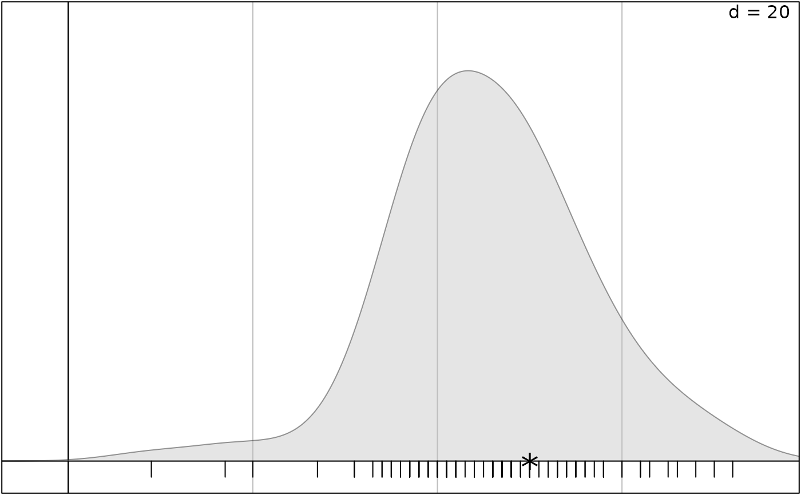

Adds points on graphics.
addpoint.RdAdds a trellis object containing one or several points on one or several graphical objects.
Arguments
- object
an object of class
ADEgorADEgS- xcoord
an integer (or a vector) indicating where
labelis(are) plotted on the x-axis, passed to thepanel.pointsfunction of thelatticepackage- ycoord
an integer (or a vector) indicating where
labelis(are) plotted on the y-axis, passed to thepanel.pointsfunction of thelatticepackage- plot
a logical indicating if the graphics is displayed
- ...
Other arguments. Additional graphical parameters (see the
ppointslist inadegparandtrellis.par.get). Ifobjectis anADEgS, the argumentwhichidentify whichADEgis/are used for superposition.
Author
Aurelie Siberchicot aurelie.siberchicot@univ-lyon1.fr and Stephane Dray
Examples
data(deug, package = "ade4")
deug$cent[1]
#> Algebra
#> 50
g1 <- s1d.density(deug$tab[, 1], plot = FALSE)
addpoint(g1, xcoord = deug$cent[1], ycoord = 0, ppoints = list(col = "black",
pch = "*", cex = 3))
